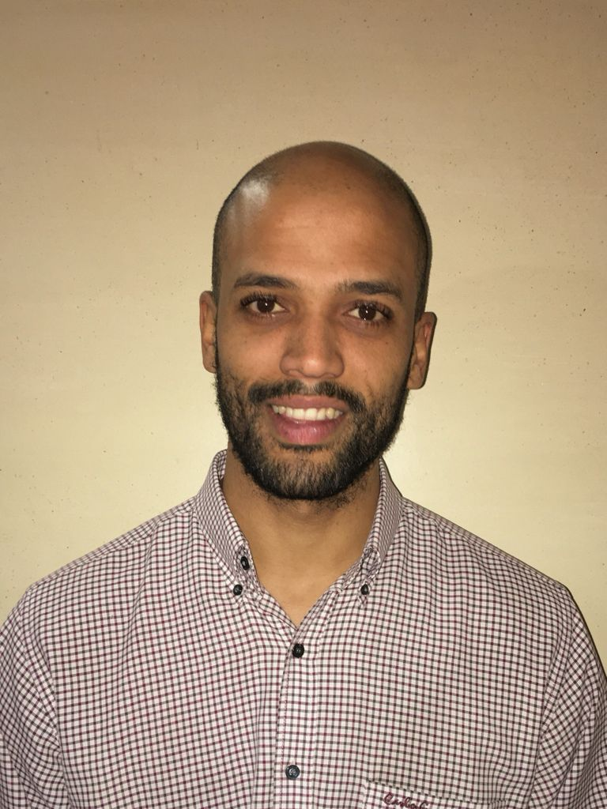

Garth Nicholas Smith
Aspiring Software Developer
I have been trying to earn an income and more tha 1 stream of income since the age of 15 as I wanted to buy a playstation2 at the time, and my parents said I should pay for it myself.
Based on my personal research I see Information Technology, Blockchain technology, AI and coding to be the future and I would like to contribute to this future and bridge the tech skills gap in Africa.
I would like to be able to create programs for small business owners and begin working on Currency trading bots, that I can run backtests on based on updated rules.
Education, Skills and Competencies:
Tertiary Qualification:
Duration: 2011 - 2015
Institution: University of The Western Cape
Degree: B.sc. Sport Science - with Medical Bioscience and Biotechnology as Majors
NQF Level 7
Secondary Qualification:
Duration: - 2004-2008
Institution: Fairbairn College
NQF Level 4
Behavioral Competencies:
Client service orientation
Ability to manage expectations
Ability to communicate effectively with colleagues, management and clients
Ability to work alone and as part of a team
Professional, honest and accountable
Disciplined in being able to follow documented procedures and processes
No criminal record or negative credit record
Work Experience:
2007-2015 - Working as a student in a pharmacy and at part-time/seasonal vacancies until graduation from University.
After graduating I got introduced to and began to learn about investing in the Financial markets and investing in company stocks and how BIG DATA is the core of all of this - and took a Gap year to begin to teach myself and expand knowledge in this area.
2017 - Started a 1 year Internship at Alexander Forbes insurance but was not interested in learning about insurance products and how to sell it.
2018 - Found and applied at this Digital Outsourcing company (DOS) who has many clients, including an international Sportsbook, which has complex IT infrustructure to facilite the activities of their millions of online customers.
2020 - While working at (DOS) - I have Job shadowed various departments between 2018 and 2021 - and got a promotion to the Responsible gambling department as a Responsible Gambling Specialist.
Coding projects completed:
While completing the Software Engineering bootcamp at Educational institution - HyperionDevelopment:
HyperionDevelopment
Thus far I have created two project management programs using two core languages: Python and Java
Here is a link to my GitHub account where those projects have been uploaded:
GitHub
Contact Details:
Name:Garth Nicholas Smith
Contact number: 074 826 8748
Email address: Garthsmi07@gmail.com
LinkedIn profile: LinkedIn